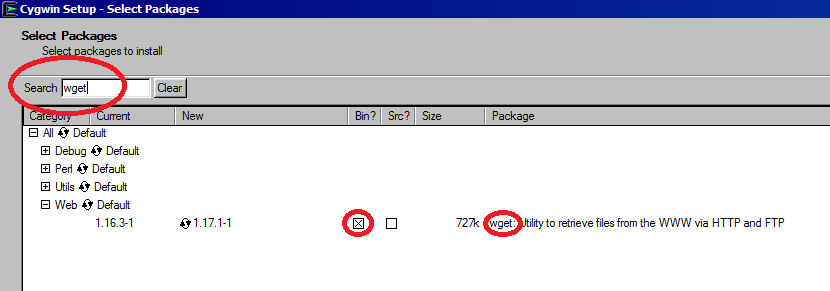

Compatibility Check and Installation of Support Programs
The system has been tested under CentOS (7), Mac OS X (Yosemite, 10.10) using the GNU Bash shell and Windows 7/8.1/10 using the Cygwin commandline interface. It is required to install the Java JRE or JDK and eventually (for running the application examples) the Wget, UnZip, xargs and bc command(s). It may also run under other operating systems, which provide Bash-script support and the xargs or parallel commands as well as Java support.
Bash - support: Start the bash command from the terminal. If no error appears, your system contains the bash shell.
Java support: Start java -version command from the terminal, if the reported version is "1.8.0" or newer and the output contains the information that this is a 64-Bit version, all is fine. Otherwise, install the 64-Bit Java Runtime Environment (JRE) or the JDK for your operating system (Download-Link).
Additional commands for running the provided application examples:
Wget - support: Start the wget command from the terminal. If no error appears, your system contains the Wget program.
Unzip - support: Start the unzip command from the terminal. If no error appears, your system contains the UnZip program.
Xargs - support: Start the xargs command from the terminal. If no error appears, your system contains the xargs command.
Bc - support: Start the bc command from the terminal. If no error appears, your system contains the bc (arbitrary-precision arithmetic language).
After the installation of the required software tools you can extract the mcccs release zip and continue with the automatic download of application examples and libraries (please check the online documentation for further information). The examples tab gives an overview about the example data and analysis procedures.
Installation hints
Linux
Most of the linux distributions include the missing packages in their repositories, by utilizing a package manager (like yum, apt-get, pacman) they can be easily installed.
MAC
The missing support commands can be easily installed by using Rudix. For running the java commands the Java Development Kit (jdk) is needed.
Windows
During the Cygwin installation please make sure that you include the required commands. The screenshot below shows an example for adding the wget command, you can find the commands by utilizing the search function (the commands are in the following sub-menus: wget -> Web, bc -> Math, unzip -> Archive). Also, it is recommended to use a user account without any space in the account name.

For further information about system installation and usage, please check the online documentation. Also a guide trough running the applcation examples is provided within a toutorial.